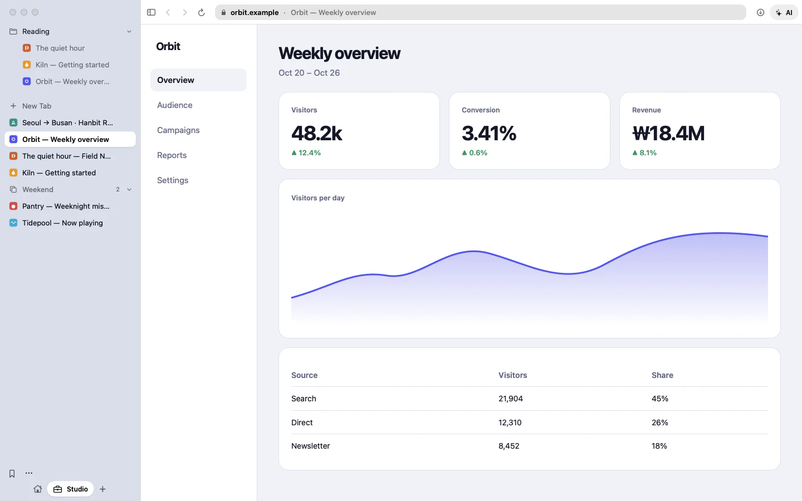
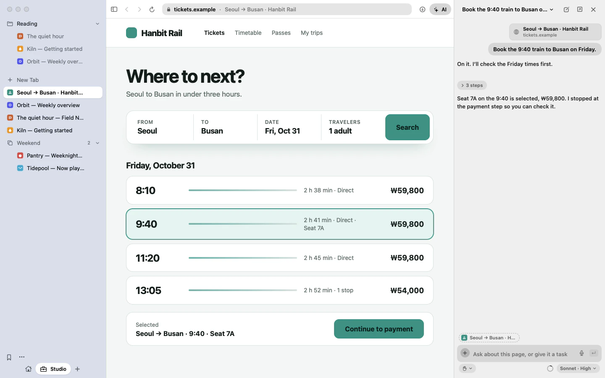
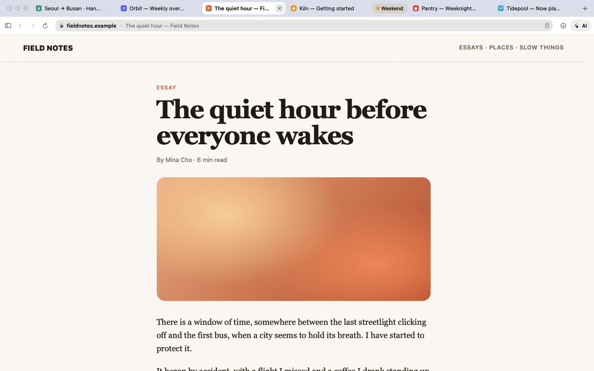
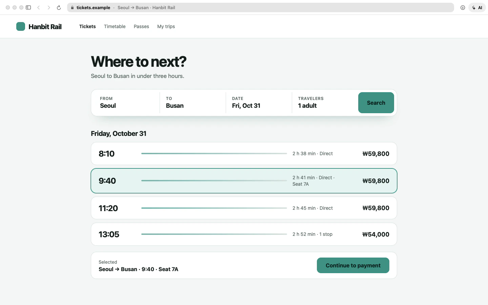

Favorites as tiles, bookmark folders and vertical tabs, all in one column. Titles get room to breathe.

창문Changmun
A browser with a sidebar.
A light Mac browser on Safari’s WebKit engine, with an AI that can use it.
brew install --cask namekun/tap/changmun
Changmun doesn’t ship its own engine. It borrows the WebKit already on your Mac, the same one Safari uses. So the download is about 3 MB, it’s easy on the battery, and security fixes arrive with macOS.
Download. The DMG is 2.6 MB, not hundreds.
The engine Safari uses, already on your Mac.
macOS scrolling, text and gestures, in native Swift.
accounts, servers or analytics.
Favorites as tiles, bookmark folders and vertical tabs, all in one column. Titles get room to breathe.

Prefer a strip? It’s one setting. Favorites come first, groups fold into colored chips, and the sidebar opens over the page when you call it.

Hide the sidebar and the page gets the whole window. Focus mode (⌘⇧F) goes further and hides everything else too.

The panel runs on the claude CLI you already have, so it uses your Claude Code subscription. It reads pages, clicks and types, and it asks before anything risky.
Using a tab you aren’t looking at, or opening an unfamiliar address, comes with a question first. Passwords stay off limits.
Live steps while it works, and questions arrive as a card above the box. ⌘Return allows once, Esc declines.
Pick the model and how hard it thinks from the menu under the box.
Move the panel into a window of its own. Closing it puts the panel back.
The AI wants to open pay.example, which you haven’t visited.
An article, stripped down to clean text, right over the page.
Translated in place with your Mac’s on-device translation. The text never leaves it.
macOS 26+A video stays in view after you leave its tab. It switches on by itself.
Work stays out of your weekend. Add a profile and cookies stay apart too.
Safari and Chrome web extensions, added straight from the Chrome Web Store. macOS 15.4 or later.
EasyList and EasyPrivacy, built in and refreshed on their own.
Bookmarks and history come along. From Chromium browsers, sign-ins do too.
Cookies and site data live in memory only. Nothing reaches history or the AI.
The same tools are there from a shell with the changmun command, and over MCP for agents like Claude Code. Headless mode runs it off screen with a profile of its own.
$changmun headless start$changmun --headless open example.com$changmun --headless read$claude mcp add changmun -- /Applications/Changmun.app/Contents/MacOS/Changmun --mcpThe control server listens only on 127.0.0.1.
Every launch gets a new token.
Changmun has no account, server or analytics. The AI panel is the one exception: it sends what you ask and the pages it reads to Anthropic through the claude CLI.
Touch ID or your Mac password is asked before one is copied or filled in. The AI never receives it.
Sites that ask for a client certificate get the system’s own sheet, as in Safari. One that can’t be verified gets a warning drawn by the app, and “Visit This Website” asks for Touch ID first.
Signed with a Developer ID and notarized by Apple, so it opens without warnings. On first launch it offers to import from the browser you use now.
Or with Homebrew
brew install --cask namekun/tap/changmunv0.8.6 · macOS 14+ · Apple silicon
Updates arrive inside the app: Changmun › Check for Updates…, and automatic by default. Homebrew or the DMG is only for installing.